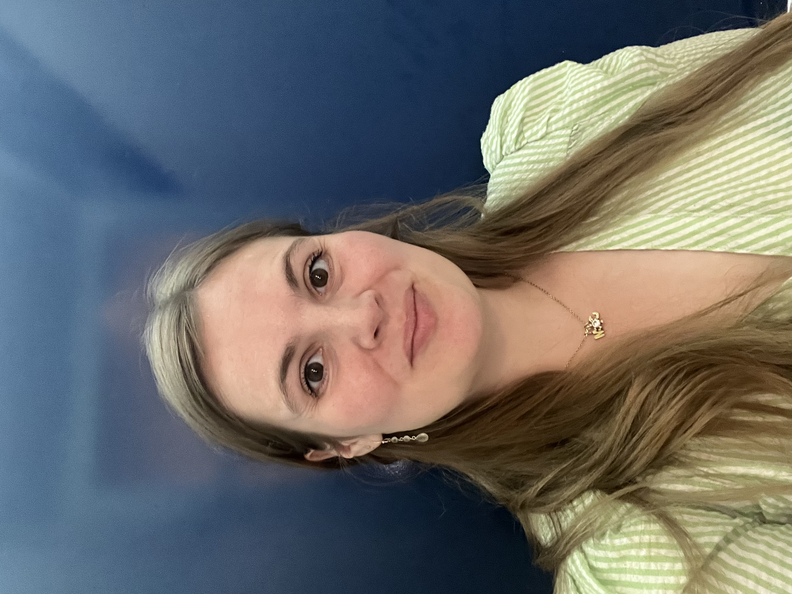

Studerende på MMD forår 2026
Jeg er 31 år og bor sammen med min lille familie i en lejelighed i Nordvest. Jeg brænder for, at formidle og kommunikere. Og jeg håber på at MMD uddannelsen kan give mig flere redskaber til at formidle visuelt, med brug af grafisk design, fotografering, videomateriale og programmering.
Jeg startede min studie rejse på RUC med at læse Journalistik og Informatik, drømmen var dengang at være sports journalist med fokus på motorsport. Men drømmen ændrede sig og det gjorde livet også, og efter jeg blev mor kom livet i et nyt perspektiv. Det gik op for mig, at mine drømme ikke var de samme længere og at det var på tide at skifte spor. Jeg ville gerne være mere kreativ og have flere praktiske redskaber. Jeg ledte uddannelserne igennem og endte med at søge fire forskellige udannelser og kom ind på dem alle sammen. Så jeg sad med endnu et stort valg.
Jeg havde lagt min tidligere uddannelse på hylden og nu ventede der en uvis fremtid lige om hjørnet. Jeg lavede fordele og ulemper for alle de uddannelser jeg var kommet ind på, jeg spurgte chatgpt, familie og venner til råds, men i sidste ende valgte jeg efter hjertet. Jeg valgte det sted jeg bedst kunne se mig selv blive udfordret, men samtidig også bruge de kompetancer jeg alleredre havde med i baggagen.
Ja. Det må tiden vise. Men jeg har aldrig før prøvet at sidde i et rum med andre mennesker, der på den ene sidde lignede mig selv så meget i deres drømme og kreative tilgang og så alligvel var så forskellige i hvad vi havde med i baggagen. Jeg følte en brik falde på plads den første dag og nu glæder jeg mig bare til at komme igang.
Min hverdag fyldes op af at bruge tid med min mand Magnus og min datter Clementine. Min datter er lige blevet to år og vi kalder hende for Clemme. Magnus er chef på NoStress, en cocktailbar på Nørregade. Så dette billede siger mere om mig end tusinde ord kan.
Email: Piha1001@stud.ek.dk
Telefon nr: 60898345